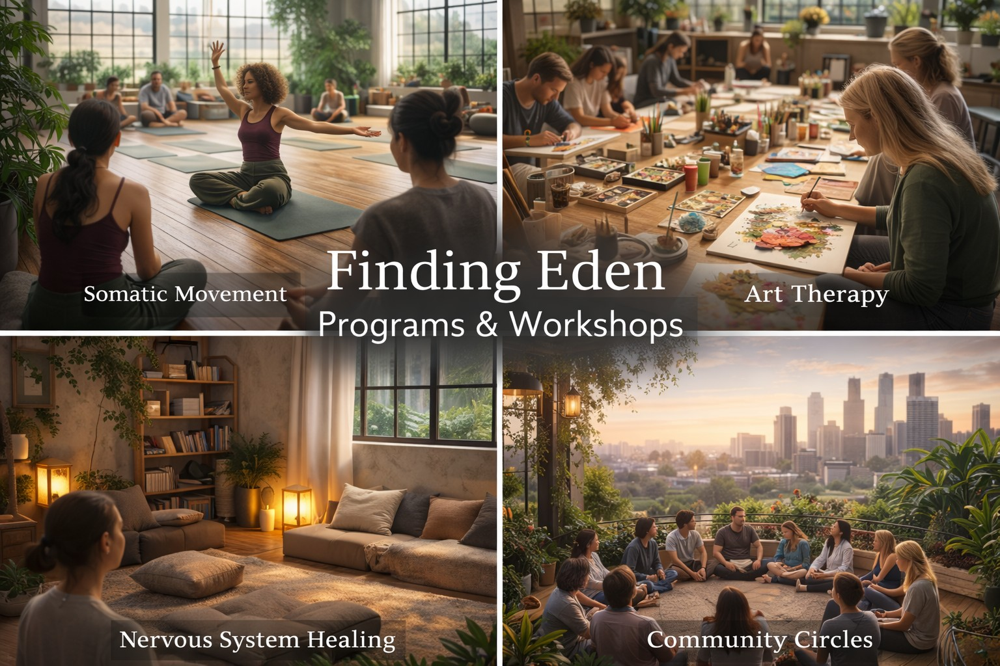

Somatic Movement
Trauma-informed movement, grounding sequences, gentle mobility, music-led release, and body-awareness exercises that help people reconnect with sensation and safety.
The first Finding Eden events are designed to introduce the kinds of offerings this project hopes to make more accessible over time.

These offerings can be hosted as stand-alone workshops, recurring classes, community circles, or stations within a larger launch event.
Trauma-informed movement, grounding sequences, gentle mobility, music-led release, and body-awareness exercises that help people reconnect with sensation and safety.
Guided art-making, collage, journaling, expressive prompts, and creative processing for people who need a less verbal doorway into healing.
Breathwork, calming tools, sensory reset practices, mindfulness, reflection stations, and practical exercises that help people come back into their bodies.
Facilitated group conversations centered on storytelling, shared humanity, emotional honesty, and being witnessed without fixing or judgment.
Future offerings designed to support teens, young adults, caregivers, and families through creative programs, mentorship, emotional literacy, and community resources.
Anonymous stories, reflections, journals, and podcast-inspired spaces that encourage vulnerability, expression, and healing through being heard.